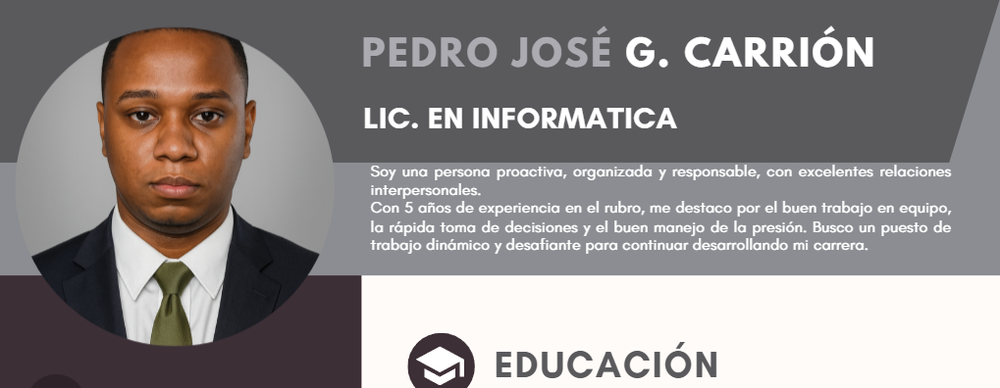

Inicio

Soy estudiante de Licenciatura en Informática y emprendedor en el área tecnológica, con experiencia en gestión administrativa,
soporte técnico y organización de procesos. A lo largo de mi formación académica y profesional he desarrollado habilidades tanto
técnicas como operativas, permitiéndome adaptarme a distintos entornos laborales con eficiencia y responsabilidad.
Actualmente soy propietario de un cyber y centro de videojuegos, donde gestiono operaciones diarias, mantenimiento de equipos,
atención al cliente, administración de recursos y supervisión de servicios tecnológicos.
Esta experiencia me ha permitido fortalecer mis capacidades en liderazgo, toma de decisiones, resolución de problemas y gestión empresarial.
Mi perfil combina conocimientos en tecnología, experiencia administrativa y visión emprendedora.
Me caracterizo por ser una persona organizada, orientada a resultados y comprometida con la mejora continua.
Pueden observar mi Curriculum para mas informacion Click Aqui para ver mi Curriculum.
Quien soy

Soy una persona disciplinada, proactiva y orientada al crecimiento constante. Desde mis inicios me he interesado por la tecnología no solo como herramienta, sino como medio para generar soluciones y oportunidades de negocio.
Mi experiencia incluye trabajos en archivo, gestión documental, soporte técnico y atención al cliente, donde he desarrollado habilidades como organización de información, manejo de sistemas, mantenimiento básico de equipos y asistencia tecnológica.
Como emprendedor, he asumido la responsabilidad de administrar mi propio negocio tecnológico, lo que implica planificación estratégica, control financiero, mantenimiento de infraestructura tecnológica, gestión de clientes y mejora continua del servicio.
He realizado diversos cursos complementarios, incluyendo formación en inglés básico e intermedio, fortaleciendo mi capacidad de comunicación y ampliando mis oportunidades profesionales.
Mi objetivo es continuar creciendo en el área tecnológica, desarrollando proyectos que integren innovación, eficiencia y visión empresarial.
Curriculum

Este espacio resume mi experiencia real en el ámbito tecnológico y empresarial. Mi formación en Informática me ha permitido comprender los fundamentos técnicos del área, mientras que la administración de mi propio negocio tecnológico me ha dado la oportunidad de aplicar ese conocimiento en situaciones concretas y cotidianas.
Gestionar un cyber y centro de videojuegos implica mucho más que operar equipos: requiere organización constante, supervisión del funcionamiento de la infraestructura, control de tiempos y servicios, atención directa a clientes y solución inmediata de cualquier inconveniente técnico que pueda surgir.
A lo largo de mi desarrollo profesional he complementado mis estudios con cursos adicionales, fortaleciendo habilidades técnicas y ampliando mi capacidad de comunicación. Me enfoco en mantener un desempeño estable, responsable y orientado a resultados prácticos.
Este currículum representa no solo preparación académica, sino experiencia construida desde la práctica y la gestión directa.
Contactos